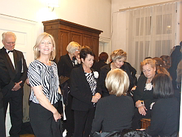
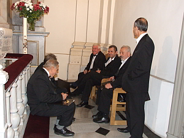
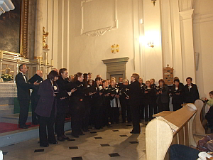
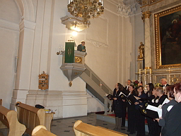
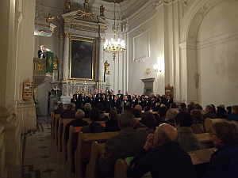
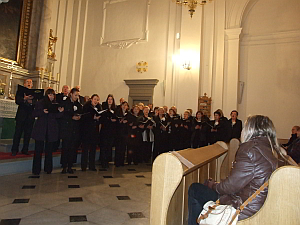

A tymczasem w Cameracie...
.
2011-11-09
Noc, Kraków tajemniczy, pięknie oświetlony. Spotykamy się pod bramą kościoła św. Marcina skupieni, ale uśmiechnięci. W tej to parafii Ewangelicko-Augsburskiej zorganizowany został koncert. Wystąpili uczniowie i absolwenci klasy organów Szkoły Muzycznej I stopnia przy SOSW dla Dzieci Niewidomych i Słabowidzących w Krakowie.Wystąpili:
Martin Jung – trąbka
Małgorzata Bała – organy
I oczywiście nasz chór
Przygotowujemy się do koncertu. Panie bardziej intensywnie,wiadomo,kobiety. Panowie spokojni, gotowi czekają.
 
Krótka rozśpiewka przed koncertem i..... niespodzianka niezbyt miła dla chóru. Pani organistka, akompaniatorka M. Bała, nie widzi dyrygentki, więc co? Pani dyrygent wychodzi dyrygować na ambonę.
 
Chór śpiewa z zadartymi głowami. Śpiewa i marudzi, ale to nie jest argument, że niewygodnie, że źle się tak śpiewa. Pada krótka odpowiedź od pani dyrygent „W każdych warunkach, nawet najdziwniejszych trzeba umieć śpiewać i to pięknie”.
 
No i zaśpiewaliśmy cuuuudnie. Dostaliśmy rzęsiste brawa a pani dyrygentka zebrała gratulacje.

© Stowarzyszenie Muzyczne Chór Camerata Wieliczka